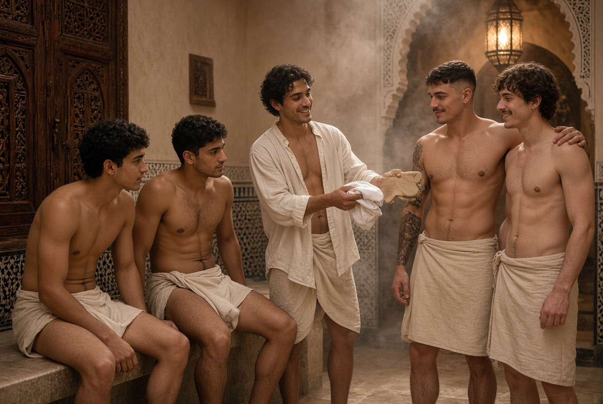
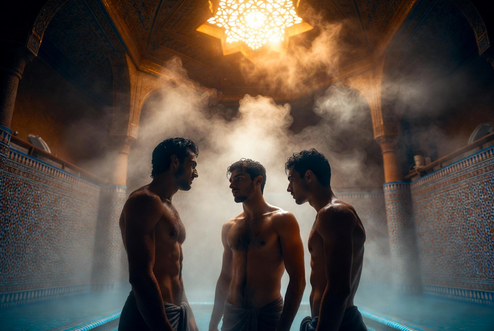

Expériences
Ce ne sont pas des produits touristiques. Ce sont des gestes de la maison, proposés avec mesure aux hôtes sélectionnés — et vécus d'abord par ceux qui y résident.

Au Riad, l'expérience n'est pas un service à consommer. C'est une participation mesurée à la vie de la maison : le rythme de la prière, le geste des métiers, le silence du patio, la table partagée.
Ce qui suit n'est pas un catalogue. Ce sont des portes ouvertes — avec prudence — sur ce qui se vit déjà ici.

Hammam
Chaleur, eau, silence. Le hammam du Riad n'est pas un spa : c'est un espace de purification et de repos, dans la continuité de la tradition maghrébine.

Sauna
Chaleur sèche, souffle, récupération. Un espace discret pour le corps après le travail ou l'entraînement.

Métiers & gestes
Assister, parfois participer, au travail des ateliers — zellige, bois, calligraphie, parfums — sans transformer le métier en spectacle.

Cuisine & table
La table du Riad suit les saisons et le potager. Partager un repas, c'est entrer dans le rythme de la maison.
Musique & chant
Écoute, parfois participation. Instruments traditionnels, voix, silence après les notes — jamais un concert de variété.

Présence & conversation
Le majlis du soir, la lecture, la parole partagée. La conversation comme art de la présence.
Silence & rythme
Le Riad n'est pas un lieu d'agitation. Le silence du patio, l'ombre du jardin, le rythme des prières structurent la journée autant que les métiers.
Ces expériences sont proposées aux hôtes sélectionnés et, dans une mesure adaptée, aux résidents. Elles ne constituent pas un « produit » : elles sont l'expression naturelle de la vie du Riad.